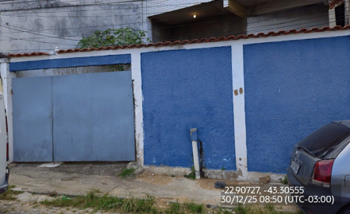
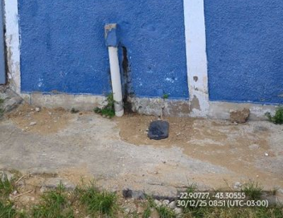
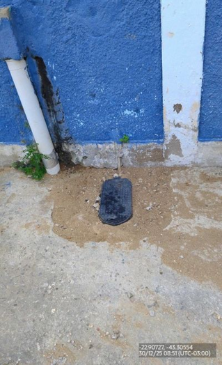
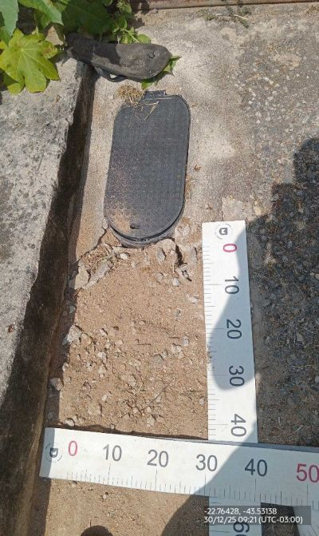
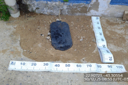
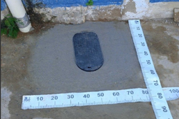
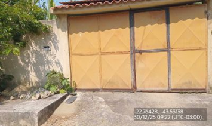

Nesta Ordem de Serviço, será executada a repavimentação de valas em calçadas, com o objetivo de recompor os
pavimentos que foram previamente escavados para a realização de atendimentos operacionais. Este serviço é
fundamental para restabelecer as condições adequadas de circulação, segurança e acabamento do local. A
equipe deverá seguir rigorosamente as boas práticas e as orientações estabelecidas neste guia, garantindo a
correta execução do serviço e o atendimento aos padrões técnicos exigidos
Qual pavimento da calçada?
Deslocamento – Field Service: A equipe deve abrir a rota no sistema e seguir até o
local indicado na
Ordem de Serviço. Antes de iniciar o serviço, é obrigatório conferir se a localização informada no
sistema corresponde ao endereço físico da calçada onde será feita a repavimentação.
Início – Chegada: Ao chegar ao local, a equipe deve identificar corretamente o ponto onde o pavimento será recomposto. Esse ponto deve ser o mesmo indicado na Ordem de Serviço de origem. Também é necessário confirmar que existem sinais ou evidências da intervenção anterior, garantindo que o serviço será executado no local correto.
Execução do Reparo: A equipe deve realizar a repavimentação seguindo o mesmo padrão da calçada existente, recompondo totalmente a área que foi escavada na Ordem de Serviço (OS) de origem. O concreto utilizado deve ser adequado para tráfego de pedestres. Deve ser utilizado concreto simples, com resistência mínima de 15 MPa, aos 28 dias. Como referência, pode ser utilizado: Traço 1:2:3 ou 1:3:5 (cimento, areia e brita); Quantidade de água controlada, evitando excesso, para garantir boa resistência e acabamento. O serviço deve resultar em um pavimento resistente, nivelado e com bom acabamento, sem desníveis ou falhas.
Início – Chegada: Ao chegar ao local, a equipe deve identificar corretamente o ponto onde o pavimento será recomposto. Esse ponto deve ser o mesmo indicado na Ordem de Serviço de origem. Também é necessário confirmar que existem sinais ou evidências da intervenção anterior, garantindo que o serviço será executado no local correto.
Execução do Reparo: A equipe deve realizar a repavimentação seguindo o mesmo padrão da calçada existente, recompondo totalmente a área que foi escavada na Ordem de Serviço (OS) de origem. O concreto utilizado deve ser adequado para tráfego de pedestres. Deve ser utilizado concreto simples, com resistência mínima de 15 MPa, aos 28 dias. Como referência, pode ser utilizado: Traço 1:2:3 ou 1:3:5 (cimento, areia e brita); Quantidade de água controlada, evitando excesso, para garantir boa resistência e acabamento. O serviço deve resultar em um pavimento resistente, nivelado e com bom acabamento, sem desníveis ou falhas.
Onde foi feita a Repavimentação?
Realizar instalação da Caixa de Proteção (Capela) e seguir com Conferência de Viabilidade
Verificar o nivelamento da Caixa Piso com a calçada e seguir com Aferição da Repavimentação
Verificar a existência de mais valas no serviço de origem e seguir com Aferição da Repavimentação
Deslocamento – Field Service: A equipe deve abrir a rota no sistema e seguir até o
local indicado na
Ordem de Serviço. Antes de iniciar o serviço, é obrigatório conferir se a localização informada no
sistema corresponde ao endereço físico da calçada onde será feita a repavimentação.
Início – Chegada: Ao chegar ao local, a equipe deve identificar corretamente o ponto onde o pavimento será recomposto. Esse ponto deve ser o mesmo indicado na Ordem de Serviço de origem. Também é necessário confirmar que existem sinais ou evidências da intervenção anterior, garantindo que o serviço será executado no local correto.
Preparação do Local: A equipe deverá delimitar a área onde será realizada a intervenção, utilizando cones, fitas zebradas e, quando necessário, barreiras físicas, garantindo o isolamento da área e a segurança operacional.
Execução do Reparo: A equipe deve realizar a repavimentação de calçadas com pisos especiais, como cerâmica, porcelanato, lajotas, pedras naturais ou materiais similares, mantendo o mesmo padrão da calçada existente.
A recomposição deve:
Abranger toda a área escavada na Ordem de Serviço (OS) de origem;
Manter alinhamento, nível e acabamento iguais ao pavimento ao redor;
Utilizar argamassa adequada ao tipo de piso aplicado.
O assentamento do piso deve garantir:
Boa fixação das peças;
Superfície regular, sem desníveis;
Rejunte compatível;
O serviço deve resultar em um pavimento seguro para o pedestre, resistente e com acabamento uniforme.
Início – Chegada: Ao chegar ao local, a equipe deve identificar corretamente o ponto onde o pavimento será recomposto. Esse ponto deve ser o mesmo indicado na Ordem de Serviço de origem. Também é necessário confirmar que existem sinais ou evidências da intervenção anterior, garantindo que o serviço será executado no local correto.
Preparação do Local: A equipe deverá delimitar a área onde será realizada a intervenção, utilizando cones, fitas zebradas e, quando necessário, barreiras físicas, garantindo o isolamento da área e a segurança operacional.
Execução do Reparo: A equipe deve realizar a repavimentação de calçadas com pisos especiais, como cerâmica, porcelanato, lajotas, pedras naturais ou materiais similares, mantendo o mesmo padrão da calçada existente.
A recomposição deve:
Abranger toda a área escavada na Ordem de Serviço (OS) de origem;
Manter alinhamento, nível e acabamento iguais ao pavimento ao redor;
Utilizar argamassa adequada ao tipo de piso aplicado.
O assentamento do piso deve garantir:
Boa fixação das peças;
Superfície regular, sem desníveis;
Rejunte compatível;
O serviço deve resultar em um pavimento seguro para o pedestre, resistente e com acabamento uniforme.
A equipe possui o piso igual ao do Cliente?
Seguir com a Repavimentação e Conferência de Viabilidade
Cliente aceitou piso Similar?
Seguir com a Repavimentação e apresentar o termo para assinatura do cliente, e seguir com Conferência
de Viabilidade
Cliente aceitou piso Similar?
Seguir com a Repavimentação e apresentar o termo para assinatura do cliente, e seguir com Conferência
de Viabilidade
Cliente aceitou repavimentação simples?
Realizar repavimentação com concreto e Trocar o Serviço para "Repavimentação Calçada Simples"
Encerrar Serviço como EXOC
Encerrar Serviço como EXOC
Deslocamento – Field Service: A equipe deve abrir a rota no sistema e seguir até o
local indicado na Ordem de Serviço. Antes de iniciar o serviço, é obrigatório conferir se a localização
informada no sistema corresponde ao endereço físico da calçada onde será feita a
repavimentação.
Início – Chegada: Ao chegar ao local, a equipe deve identificar corretamente o ponto onde o pavimento será recomposto. Esse ponto deve ser o mesmo indicado na Ordem de Serviço de origem. Também é necessário confirmar que existem sinais ou evidências da intervenção anterior, garantindo que o serviço será executado no local correto.
Execução do Reparo: A equipe deve realizar a repavimentação seguindo o mesmo padrão da calçada existente, recompondo totalmente a área que foi escavada na Ordem de Serviço (OS) de origem.
Verificar as dimensões da área escavada conforme a OS.
Remover materiais soltos, instáveis ou inadequados.
Regularizar, nivelar e compactar a base, garantindo estabilidade. Aplicar camada uniforme de pó de pedra ou material granular equivalente, com espessura compatível.
Reassentar os blocos ou pedras conforme o padrão existente, assegurando alinhamento, nivelamento e travamento. Preencher adequadamente as juntas entre as peças.
Compactar a superfície final, garantindo estabilidade e acabamento adequado.
O serviço deve resultar em um pavimento resistente, nivelado e com bom acabamento, sem desníveis ou falhas.
Início – Chegada: Ao chegar ao local, a equipe deve identificar corretamente o ponto onde o pavimento será recomposto. Esse ponto deve ser o mesmo indicado na Ordem de Serviço de origem. Também é necessário confirmar que existem sinais ou evidências da intervenção anterior, garantindo que o serviço será executado no local correto.
Execução do Reparo: A equipe deve realizar a repavimentação seguindo o mesmo padrão da calçada existente, recompondo totalmente a área que foi escavada na Ordem de Serviço (OS) de origem.
Verificar as dimensões da área escavada conforme a OS.
Remover materiais soltos, instáveis ou inadequados.
Regularizar, nivelar e compactar a base, garantindo estabilidade. Aplicar camada uniforme de pó de pedra ou material granular equivalente, com espessura compatível.
Reassentar os blocos ou pedras conforme o padrão existente, assegurando alinhamento, nivelamento e travamento. Preencher adequadamente as juntas entre as peças.
Compactar a superfície final, garantindo estabilidade e acabamento adequado.
O serviço deve resultar em um pavimento resistente, nivelado e com bom acabamento, sem desníveis ou falhas.
Serviço Viável?
Encerrar Ordem de Serviço como EXOC e selecionar o motivo da "Não Execução":
Retornar Depois: Utilizar quando a equipe for ao local, mas não conseguir executar o serviço por falta de material, equipamentos ou por ter sido direcionada para atendimento emergencial;
Serviço já executado: Selecionar quando a equipe chegar ao local da OS e constatar que o serviço já foi realizado;
Nada a fazer: Utilizar quando a equipe comparecer ao local e verificar que não há serviço a ser executado;
Imóvel não localizado: Utilizar somente após tentar todas as formas de localizar o imóvel, como consulta a listagens, verificação no local e registro fotográfico da fachada. Todos os procedimentos realizados devem ser descritos no parecer técnico;
Impedimento de Execução: Utilizar quando o cliente ou responsável pelo local impedir a execução do serviço. O líder deve ser comunicado. Se o impedimento continuar, a situação deve ser detalhada no parecer técnico.
Área de Risco: Utilizar quando o local for identificado como área de risco e a equipe receber orientação para se retirar. É obrigatória a comunicação imediata ao líder e o registro da ocorrência no relatório;
Objeto impedindo a execução: Utilizar quando veículos, entulhos ou outros objetos impedirem a execução do serviço no local.
Retornar Depois: Utilizar quando a equipe for ao local, mas não conseguir executar o serviço por falta de material, equipamentos ou por ter sido direcionada para atendimento emergencial;
Serviço já executado: Selecionar quando a equipe chegar ao local da OS e constatar que o serviço já foi realizado;
Nada a fazer: Utilizar quando a equipe comparecer ao local e verificar que não há serviço a ser executado;
Imóvel não localizado: Utilizar somente após tentar todas as formas de localizar o imóvel, como consulta a listagens, verificação no local e registro fotográfico da fachada. Todos os procedimentos realizados devem ser descritos no parecer técnico;
Impedimento de Execução: Utilizar quando o cliente ou responsável pelo local impedir a execução do serviço. O líder deve ser comunicado. Se o impedimento continuar, a situação deve ser detalhada no parecer técnico.
Área de Risco: Utilizar quando o local for identificado como área de risco e a equipe receber orientação para se retirar. É obrigatória a comunicação imediata ao líder e o registro da ocorrência no relatório;
Objeto impedindo a execução: Utilizar quando veículos, entulhos ou outros objetos impedirem a execução do serviço no local.
Seguir com a Repavimentação e Conferência de Viabilidade
Observações Importantes para a Correta Aferição das Valas Pavimentadas
Não é permitido o uso de aferição por formatos circulares, triangulares ou estimativas visuais.
Toda aferição fora do padrão quadrático ou de composição por áreas quadradas será registrada como não conformidade.
A área medida deverá corresponder exatamente à área pavimentada recomposta, sem acréscimos ou omissões.
Não é permitido o uso de aferição por formatos circulares, triangulares ou estimativas visuais.
Toda aferição fora do padrão quadrático ou de composição por áreas quadradas será registrada como não conformidade.
A área medida deverá corresponder exatamente à área pavimentada recomposta, sem acréscimos ou omissões.
Qual o Formato da Vala?
Medir o comprimento e a largura da área recomposta utilizando fita métrica, iniciando
obrigatoriamente no ponto zero;
Registrar as dimensões aferidas;
Calcular a área pela multiplicação dos lados (Comprimento × Largura).
A área aferida deverá corresponder integralmente à área recomposta da OS.
Registrar as dimensões aferidas;
Calcular a área pela multiplicação dos lados (Comprimento × Largura).
A área aferida deverá corresponder integralmente à área recomposta da OS.
Dividir visualmente a área recomposta em módulos quadrados ou retangulares;
Realizar a aferição individual de cada módulo, sempre iniciando no ponto zero;
Registrar as dimensões de cada módulo separadamente;
Calcular a área de cada módulo e, ao final, somar todas as áreas obtidas para composição da área total aferida.
Realizar a aferição individual de cada módulo, sempre iniciando no ponto zero;
Registrar as dimensões de cada módulo separadamente;
Calcular a área de cada módulo e, ao final, somar todas as áreas obtidas para composição da área total aferida.
O formulário deve ser preenchido com atenção, de forma completa e fiel ao que foi executado em
campo. As informações registradas precisam corresponder exatamente ao serviço realizado.
"Qual número de Valas?"
Informe quantas valas foram repavimentadas. O limite é de até 5 valas por OS;
"Vala 1, Vala 2, ..."
Para cada vala, preencha largura, comprimento e espessura, conforme a aferição evidenciada;
"Metragem Total de Todas as Valas"
Campo preenchido automaticamente pelo sistema, com a soma das áreas de todas as valas informadas.
"Trocou a Caixa de Proteção?"
Marque esta opção quando houver troca ou instalação da caixa de proteção (capela), nos casos de cavalete fora da caixa de piso.
"Necessário Pintura?"
Marque quando for necessária a recomposição da pintura na área repavimentada;
"Necessário a Retirada de Sinalização no Local?"
Marque quando existirem tapumes, barreiras ou outros itens de sinalização que não puderam ser removidos.
Informe quantas valas foram repavimentadas. O limite é de até 5 valas por OS;
"Vala 1, Vala 2, ..."
Para cada vala, preencha largura, comprimento e espessura, conforme a aferição evidenciada;
"Metragem Total de Todas as Valas"
Campo preenchido automaticamente pelo sistema, com a soma das áreas de todas as valas informadas.
"Trocou a Caixa de Proteção?"
Marque esta opção quando houver troca ou instalação da caixa de proteção (capela), nos casos de cavalete fora da caixa de piso.
"Necessário Pintura?"
Marque quando for necessária a recomposição da pintura na área repavimentada;
"Necessário a Retirada de Sinalização no Local?"
Marque quando existirem tapumes, barreiras ou outros itens de sinalização que não puderam ser removidos.
A seguir apresentamos o padrão de fotos que deve ser seguido na execução do serviço de
Repavimentação de Calçadas.
Registrar a fachada do imóvel e o local onde o serviço será ou foi executado. A foto deve
permitir identificar corretamente o endereço e mostrar as condições de segurança no momento da
intervenção.


Registrar as condições do local antes do início da repavimentação. A foto deve mostrar
claramente a área que precisa de recomposição do pavimento.


Registro fotográfico obrigatório da metragem da área repavimentada. A fita métrica deve estar
bem posicionada e visível, permitindo conferir as dimensões executadas. As fotos devem ser
feitas antes e depois da repavimentação.


Registro fotográfico obrigatório após o término da repavimentação. A foto deve mostrar a
qualidade do serviço, o alinhamento com o pavimento existente e a limpeza do local.
